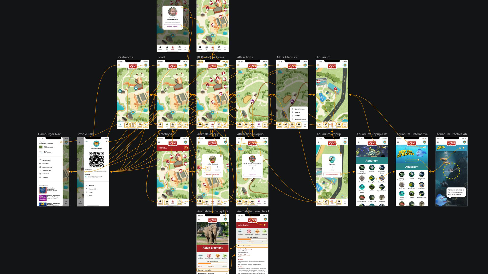

Zoo Guest App
Organization
Cardinal Health
Teammates
Priya Rao
Emily Beavers
Parker Dempsey
Summary
In late 2019, The Columbus Zoo hosted its first annual Technology Safari. The goal of the event was to engage technology leaders throughout Columbus to transform the digital experience for the Columbus Zoo. Teams from some of the top organizations around Columbus competed and presented their best vision for the Zoo’s future web and mobile app experience. While the purpose of the competition was to motivate each team to bring their best work, the overall goal was to incorporate the best ideas from across all teams into the future digital experience. The design team at Fuse, the Cardinal Health commercial technologies innovation lab won with top design for the future zoo website.
I volunteered to design the mobile app alongside another designer, while my other teammates enlisted to handle the website. This project was meant to be done in between my team duties at Fuse, what I didn’t expect was how engrossed I’d become nor how much personal time I’d invest into the project. The best part about this project (and probably the reason I put so much extra time into it) was that I was designing an app that would enhance my own experience when I visited the zoo with my family. Once complete, I had assembled a full high-fidelity prototype, and was prepared to present it to the Columbus design community.
Challenge
The requirements provided were as follows:
“A mobile application that will bring the zoo to you (focusing on education and conservation at the zoo) with the mobile app we would like people to learn about conservation and education of each animal as they come to the zoo. How we do this is up to you through video trivia games awards, points, gaming experience, etc.
We believe that every design will have a piece that stands out to be added to the final design. After all the apps are presented, we will have a discussion on what makes the best design by getting input from everyone at the technology Safari. We feel this will give us the best outcome for the designs of the website and the mobile application for the Columbus Zoo.”
Discovery
My team was given a behind-the-scenes tour of the zoo and its support facilities. We inquired about the park's current digital capabilities, goals for the new digital experience and how they wanted this new experience to grow and change over time.
Some of the high level insights we captured:
- Telecom infrastructure was being installed to ensure network coverage for all exhibits and attractions.
- The only digital map available to guests was a downloadable PDF file.
- Purchasing tickets for special attractions had to be completed in-person with staff.
- Exhibit and conservation information should be available regardless of users location.
- Desire to have the app suggest premium experiences to guests (train rides, animal feedings, special tours, etc).
- When a child goes missing a security protocol goes into place closing all entrances and exits to the park until the child has been recovered.
Prototype
I wanted to wow the local design community so I decided to produce a high fidelity prototype in Sketch. This required using Photoshop to remove text and images from the map PDF document. Challenges compounded when my design partner’s workload at Fuse became too great to contribute to the project. In the end, I was able to put together a prototype of which I am extremely proud.
Mockup features:
- Map is the central focus and the first thing displayed upon startup. The bottom nav bar acts as a filter for the map.
- Each exhibit displays information that can be found on placards around the enclosure for the animals. Including Animalia classifications, status in the wild, and additional pictures.
- Upcoming event notification banner is a non-invasive way to highlight and provide walking directions to a nearby event.
- Profile menu is home for everything about the guest and their zoo account. It includes membership status, tenure and a QR code which will be used for all tickets and attractions.
- Hamburger menu provides information about the zoo that is unrelated to the map. Includes information about weather conditions, upcoming events, and further information about the zoos other amenities and conservation efforts.
- Deep Sea Detective augmented reality game gives users the option of learning more about each fish in the exhibit, or correctly identifying the fish in the exhibit from question prompts.
The core idea behind this prototype was to provide a foundation upon which more features could later be built. During the presentation I specifically mentioned additional exhibit-specific educational games, guided audio tours, notifications about weather emergencies, security events or lost children protocol notifications.
Explore the prototype for yourself by clicking the image below. If you’re unsure where to go, click anywhere on the screen and the navigation hotspots will briefly glow indicating what you can click on next.

Outcome
In November, the Fuse team traveled down to the zoo and I presented my prototypes to the Columbus Zoo and local design community. The Tech Safari event was broken up into two sections, one for the website and another for the application.
My colleagues kicked off the event by presenting their website prototype (
video), and I volunteered to present early in the afternoon. I have to admit it was satisfying to hear the other teams comment on how they wished they had thought of some of the solutions I had presented earlier in their prototypes (the lost child feature especially).
The Fuse team was declared the winner for their proposed website prototype, and the event concluded.
To reiterate, the purpose of this event was to provide the zoo with ideas to incorporate in their final product — there would be no iteration or acceptance testing. Instead, I viewed it as an opportunity to give back to the community, network with local UX professionals, and flex my design muscles a bit.
As a bonus I got to hold a baby kangaroo during our lunch break. :)
Testimonials
Word traveled around Cardinal Health of our projects award, and I saved some quotes from senior leadership.
“I am extremely proud of the work our team contributed. More importantly, I am proud of all the teams that collaborated to improve our community. This event was a huge success!”
Steve Langella
Vice President, Fuse
“Great job to our team! Also, a personal thanks to you for volunteering to help with this event at the zoo! A big thank you for participating in the Columbus Zoo Technology Safari - and congratulations on winning the top design! I realize volunteering like this requires a personal time commitment. Thank you for representing Cardinal Health in such a positive way!”
Brian Rice
Chief Information Officer
“I’m not at all surprised that this team took the top prize. Thank you so much for sharing your great talents with our community!”
Lisa Briya
Vice President, HR